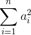

Un punto (x,y) viene disegnato nel piano cartesiano. Se si traccia una freccia orientata dall'orogine al punto individuato si ottiene un oggetto matematico chiamato vettore.
Si può intuitivamente definire la lunghezza del vettore come la lunghezza della freccia, che si trova graficamente attraverso il teorema di Pitagora ed è uguale alla radice del quadrato delle componenti, sqrt(x²+y²).
Analogamente si dimostra che in uno spazio tridimensionale per un vettore (x,y,z) vale una formula analoga: sqrt(x² + y² + z²)
Si può generalizzare questo ragionamento a spazi a più di tre dimensioni (o addirittura a infinite dimensioni). Nel caso di un vettore a N componenti la lunghezza è definita come:

Ossia la radice quadrata della somma dei quadrati delle componenti.
Scrivere una funzione vector_length che prende come parametro un vettore (rappresentato da una lista) e ne calcoli la lunghezza.
Usando le funzioni builtin chr, ord e la funzione random.shuffle del modulo random si genera una permutazione casuale dell'alfabeto:
>>> import random >>> alphabet = [] >>> i = ord('a') >>> while i <= ord('z'): ... alphabet.append(chr(i)) ... i += 1 ... >>> alphabet ['a', 'b', 'c', 'd', 'e', 'f', 'g', 'h', 'i', 'j', 'k', 'l', 'm', 'n', 'o', 'p', 'q', 'r', 's', 't', 'u', 'v', 'w', 'x', 'y', 'z'] >>> random.shuffle(alphabet) >>> alphabet ['m', 'r', 'o', 'e', 'i', 'b', 'z', 'j', 't', 'g', 'c', 'f', 'p', 'h', 'x', 'd', 'k', 'v', 'l', 's', 'y', 'n', 'w', 'q', 'u', 'a']
Un messaggio viene codificato scambiandone le lettere con quelle corrispondenti nell'alfabeto casuale. Ad esempio 'ciao' viene codificato come 'otmx'
Scaricare il file di testo segreto.txt e completare il seguente programma che la funzione decodifica nel seguente programma.
Il file deve essere salvato nella stessa cartella del programma affinché venga trovato!
def decodifica(messaggio, alfabeto): ... f = open('segreto.txt') testo_criptato = f.read() f.close() alfabeto_casuale = ['m', 'r', 'o', 'e', 'i', 'b', 'z', 'j', 't', 'g', 'c', 'f', 'p', 'h', 'x', 'd', 'k', 'v', 'l', 's', 'y', 'n', 'w', 'q', 'u', 'a'] print(decodifica(testo_criptato.strip(), alfabeto_casuale))
La distanza tra due punti è definita come la lunghezza del vettore differenza. La differenza tra vettori si fa sottraendo componente per componente:
def vector_difference(v1, v2): v3 = [] i = 0 while i < len(v1): v3.append(v1[i] - v2[i]) i += 1 return v3
Usando la funzione definita sopra (magari dopo averla capita..), scrivere una funzione distance che ritorna la distanza tra due punti.
Curiosità: usando funzionalità più avanzate di Python (list comprehension, generators), si possono scrivere funzioni simili semplicemente così
def vector_length(v): return sum(a ** 2 for a in v) ** 0.5 def vector_difference(v1, v2): return [a - b for a, b in zip(v1, v2)]